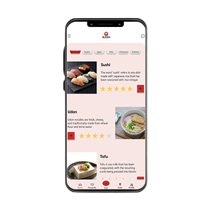
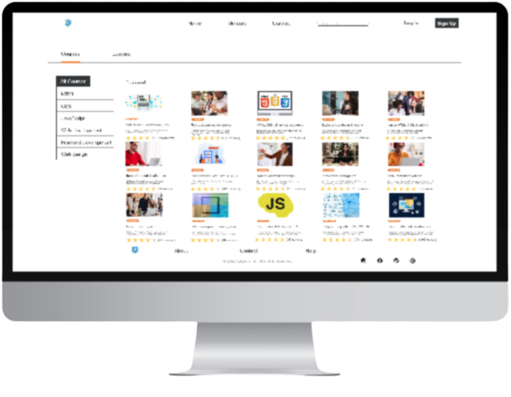
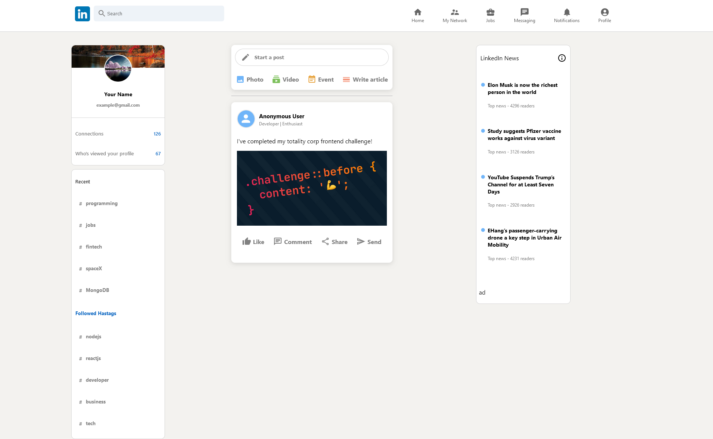
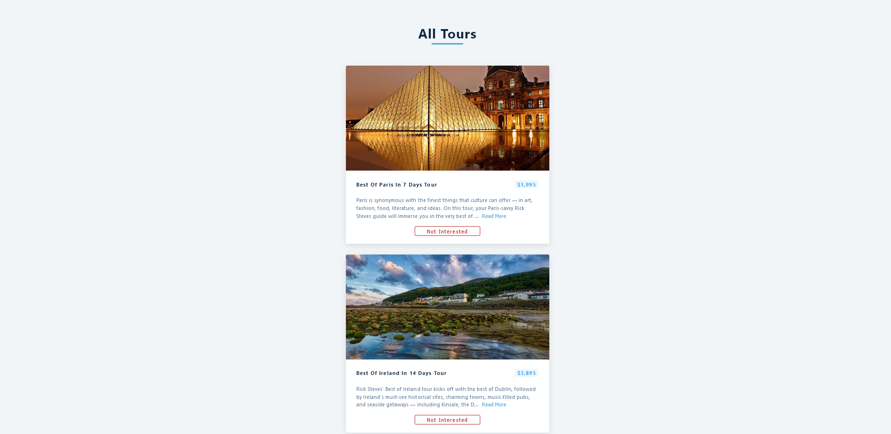
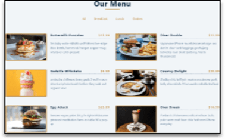
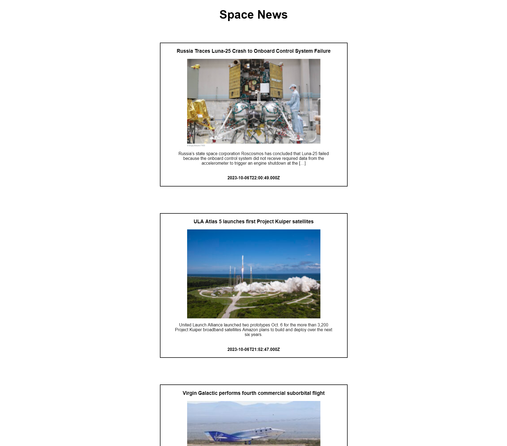

SOLVING USER FRICTION.
SHAPING HIGH-IMPACT
PRODUCT INTERFACES.
I am a UI/UX Designer & Design Technologist with an IT engineering degree (B.Tech IT), certified by Google, and battle-tested in Software QA at Ubisoft. I eliminate user drop-off and interface friction by translating complex business logic into clean, component-driven design systems, validated through usability studies and prototyped directly in code (React, HTML/CSS, JS).
Featured Projects

"Suzoki" — Food Customization App
Users felt overwhelmed by long food delivery menus and got frustrated by hidden ingredient costs at checkout.
Built a clean top navigation bar to switch categories instantly and added clear pricing (+¥100) next to every single ingredient button.
Created paper sketches, digital layouts, and a clickable interactive prototype in Figma.

Teenager E-Learning Platform
Students learning to code online got bored quickly and quit the platform when studying completely by themselves.
Redesigned the screen to show the video lesson on one side and a live chat window with classmates on the other side.
Kept the project simple by focus-building the main video player first before trying to add too many extra social features.
Interactive Front-End Implementations
Testing interaction design hypotheses directly in code (React, JavaScript, CSS) ensures zero friction during developer handoff.

LinkedIn UI Recreation
Modular React clone of LinkedIn's core feed, interactive posts, navigation bar, and sidebar widgets with clean component state.
Launch Live Demo ↗
Tours Discovery App
Dynamic travel discovery card interface with async remote data fetching, expandable reading disclosures, and dismissals.
Launch Live Demo ↗
Restaurant Culinary Filter
Instant client-side categorization engine for restaurant menu items with responsive grid reflow and accessibility.
Launch Live Demo ↗
SpaceNews Dispatcher
Automated aerospace news stream polling external public REST APIs and formatting live payloads into responsive cards.
Launch Live Demo ↗Work Experience
HAMLY BUSINESS SOLUTIONS | Process Associate
- Managed and checked large amounts of medical billing data to ensure all records were accurate and complete.
- Mapped out clear, step-by-step instructions for internal software workflows to make processing faster for the team.
- Found layout issues and slow points in our internal tools and shared feedback to improve the system's usability.
UBISOFT INDIA | Junior Game Tester (QA)
- Tested menus, screens, and settings to find layout mistakes, broken buttons, and confusing navigation loops.
- Wrote detailed bug reports in JIRA to show developers exactly where the interface was breaking and how to fix it.
- Reviewed first-time user tutorials and onboarding screens to suggest ways to make choices clearer and faster for players.
FUSION PRACTICES | Software Development Trainee
- Designed wireframes and interactive mockups for internal employee dashboards to simplify company workflows.
- Created clean user interface layouts, icons, and visual branding assets for a variety of corporate client projects.
- Built responsive web layouts focusing on simple navigation and highly intuitive user experiences.
Google UX Design Professional Certificate | Coursera (Sep 2023)
User research, persona creation, user journey maps, wireframing, high-fidelity Figma mockups, and usability testing.
B.Tech in Information Technology | SASTRA Deemed University (2014 – 2018)
Software engineering principles, Human-Computer Interaction fundamentals, database architecture, and web systems.
Skills & Arsenal
UX/UI Design
User-centered design methodologies to uncover pain points and architect intuitive digital solutions.
Tools & Front-End Code
Hands-on software tooling and engineering syntax to bridge the gap between design and production.
Bridging Empathy, Quality Assurance, & Code.
My transition into UX/UI design is anchored by technical curiosity and user advocacy. Having worked in software quality assurance at Ubisoft, I possess an ingrained reflex to spot interface friction, edge-case bugs, and confusing navigation loops before users encounter them.
At Hamly Business Solutions, mapping out internal software workflows showed me firsthand how thoughtful interface design directly impacts human productivity. Supported by the Google UX Certificate and my IT engineering degree, I design products that feel natural, eliminate user anxiety, and scale smoothly.
“Great interface design removes friction so seamlessly that users never have to think about the interface itself.”
Consciously identifying interface friction and solving it with clarity, empathy, and technical rigor is my guiding standard.
GOT A PROJECT? LET'S CONNECT.
If you're hiring for a UI/UX Designer, Product Designer, or Design Technologist role, I am currently available for full-time opportunities.